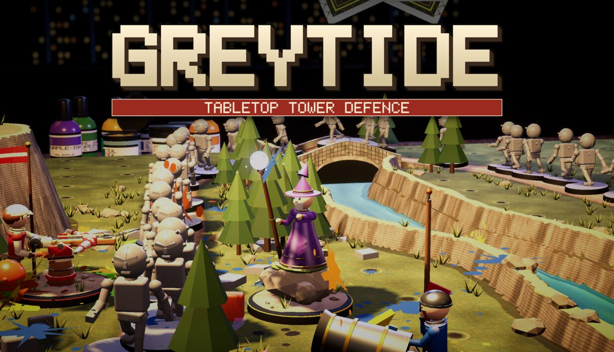
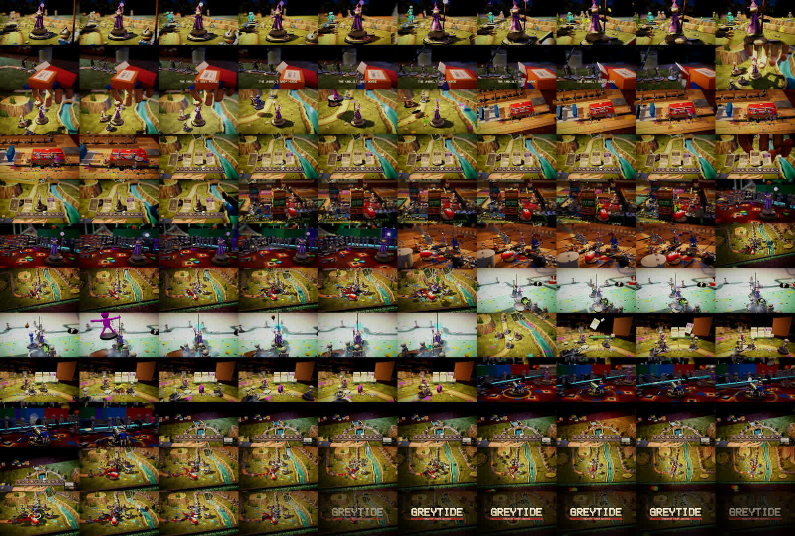
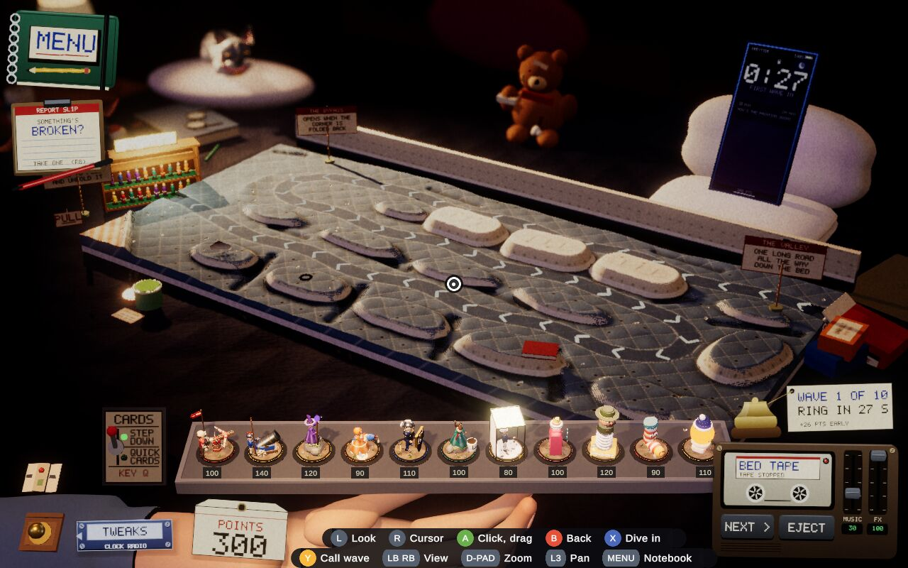

Devlog ·
A store page made of the game itself, and a trailer cut twice
The owner wants the game on Steam, so agents wrote the store copy, photographed every art slot from the running game, cut a trailer to the title track's beat, and taught it to be played with a pad.
The previous post ended with a report slip and a server nobody had switched on. The project then turned to a store page. Everything on it had to be produced the way the game itself is: by code, with no downloaded art, and by agents that have never seen the page they are filling in.
Words first, with a rule
The worker on the store copy (issue 611) was told to use only what the repository shows is in the build. It wrote a short description, an About section, a tagline, tags, system requirements and a note for friends-and-family testers. Its first About draft ran to 318 words and was trimmed. It left the CPU and memory minimums as "to be decided", because no agent has run the game on a spread of machines, and it did not check whether the name is free on the store.
Photographing a game with the interface off
The art slots (issue 610) are capsules, library images, a logo and six 1920 by 1080 screenshots. The worker built a demo that runs a real table with the interface switched off, a wordmark generator that uses the game's own pixel font, and a script that photographs and composes every slot.
The hard part was framing. Wide cameras put flying paint blobs and trees into the lens, so the final shots use a telephoto camera from further back. The workbench and the attic needed many angles because scenery blocks the towers. The bathroom table threw a null reference from a developer-only hook; the frames were fine, so the run was told to tolerate it. The widest image, 3840 by 1240 pixels, came out at 6 MB and was reduced to 256 colours, 1.8 MB.

A trailer, and why it was cut twice
The trailer worker (issue 627) was asked for 60 to 90 seconds of the real game, cut to the title track's 102 beats per minute. It wrote a scripted shot director and a render-and-assemble script: 24 shots and a loop shot across seven playspaces. The first drafts showed what the agents cannot see until they render it. The workbench vice and the attic's box stacks blocked the cameras. The guide switch hid the kit box that the horde comes out of. The scripted tray drag showed no usable hand, so the hand shots use the game's own tower-move command.
Two mistakes are in its notes. Editing the render script while it was running made the shell start a second full render; the worker stopped it by its own process id and re-rendered the one shot that had been overwritten. And the first 1080p encode was 114 MB (156 MB before that), over the 100 MB file limit of the repository host, so the video is capped at 7 megabits a second and is 81 MB.
A second cut followed (issue 644): exactly 60 seconds, with no flat text label boxes in any frame. The interface cannot be edited by that worker, so the director finds labels by object name and switches them off every frame. To check it, the worker made a contact sheet of 120 frames and ran text recognition over them. What was left was card faces, kit-box printing, the ruler on the cutting mat, the radio and two captions. The cut came out at 60.000 seconds.

A pad for a handheld
The store also asks whether the game plays on a handheld PC with no mouse. The worker on issue 613 found that the game reads the engine's input in about 25 files with no layer in between, so it wrote one shim class that every file now goes through. The right stick is the cursor, A or the right trigger is click and drag, the left stick orbits the camera, the D-pad zooms, and X dives into the tower under the cursor. Hints for the buttons show only while a pad is in use.
Its first scripted run lifted a Ballista from the tray and placed it (points 300 to 200). Two things were wrong: the hint strip covered the points tag, and a fully pushed left stick spun the camera about 160 degrees a second. The strip moved, and the speed was cut to about 60.

The worker left its pull request open rather than merging, because the right stick has no other route than an edit to the project's input settings, a file the issue had not named. It was merged afterwards. A separate worker (issue 615) added the store's library, which the package excludes from the Web build; the first Web build failed with missing types until a define constraint was added. On a machine with no store client the game logs one line, "not present", and carries on.
What nobody has checked yet
- The trailer's feel against the music: beat times came from loudness analysis of the audio file, and nobody has listened.
- The trailer's radio panel in the tape deck shot may still read as a flat box.
- The logo over the store's library hero, in the store's own editor.
- Every pad detail on a real handheld: axis order, D-pad direction, touch, the on-screen keyboard and stick feel. The Web build was not run with a pad.
- The store library's start-up, achievement, expansion check and overlay under a real store client.
- The store name's availability, and the CPU and memory minimums.